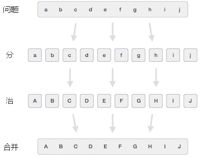

首页 > 编程笔记
分治算法
实际场景中，我们之所以觉得有些问题很难解决，主要原因是该问题涉及到大量的数据，如果只需要处理少量的数据，问题会变得非常容易解决。
举一个简单的例子，设计一个排序算法实现对 1000 个整数进行排序。对于很多刚刚接触算法的初学者来说，直接实现对 1000 个整数进行排序是非常困难的。而同样的问题，如果转换成对 2 个整数进行排序，解决起来就很容易。
分治算法中，“分治”即“分而治之”的意思。分治算法解决问题的思路是：先将整个问题拆分成多个相互独立且数据量更少的小问题，通过逐一解决这些简单的小问题，最终找到解决整个问题的方案。
如图 1 所示，分治算法解决问题的过程需要经历 3 个阶段，分别是：
分治算法中，“分而治之”的小问题之间是相互独立的，处理次序不分先后，因此可以采用“并行”的方式让计算机同时处理多个小问题，提高问题的解决效率。
分治算法的弊端也很明显，该算法经常和递归算法搭配使用，整个解决问题的过程会耗费较多的时间和内存空间，严重时还可能导致程序运行崩溃。
举一个简单的例子，设计一个排序算法实现对 1000 个整数进行排序。对于很多刚刚接触算法的初学者来说，直接实现对 1000 个整数进行排序是非常困难的。而同样的问题，如果转换成对 2 个整数进行排序，解决起来就很容易。
分治算法中，“分治”即“分而治之”的意思。分治算法解决问题的思路是：先将整个问题拆分成多个相互独立且数据量更少的小问题，通过逐一解决这些简单的小问题，最终找到解决整个问题的方案。
分治算法解决问题的过程如图 1 所示：所谓问题间相互独立，简单理解就是每个问题都可以单独处理，不存在“谁先处理，谁后处理”的次序问题。

图 1 分治算法解决问题的过程
图 1 分治算法解决问题的过程
如图 1 所示，分治算法解决问题的过程需要经历 3 个阶段，分别是：
- 分：将整个问题划分成多个相对独立、涉及数据量更少的小问题，有些小问题还可以划分成很多更小的问题，直至每个问题都不可再分；
- 治：逐个解决所有的小问题；
- 合并：将所有小问题的解决方案合并到一起，找到解决整个问题的方案。
分治算法的利弊
使用分治算法解决的问题都具备这样的特征，当需要处理的数据量很少时，问题很容易就能解决，随着数据量增多，问题的解决难度也随之增大。分治算法通过将问题“分而治之”，每个小问题只需要处理少量的数据，每个小问题都很容易解决，最终就可以解决整个问题。分治算法中，“分而治之”的小问题之间是相互独立的，处理次序不分先后，因此可以采用“并行”的方式让计算机同时处理多个小问题，提高问题的解决效率。
分治算法的弊端也很明显，该算法经常和递归算法搭配使用，整个解决问题的过程会耗费较多的时间和内存空间，严重时还可能导致程序运行崩溃。
分治算法的应用场景
分治算法解决的经典问题有很多，包括汉诺塔问题、寻找数列中最大值和最小值的问题等等。
分治算法还和其它算法搭配使用，比如二分查找算法、归并排序算法、快速排序算法等，后续章节会给大家一一进行讲解。
关注公众号「站长严长生」，在手机上阅读所有教程，随时随地都能学习。内含一款搜索神器，免费下载全网书籍和视频。

微信扫码关注公众号